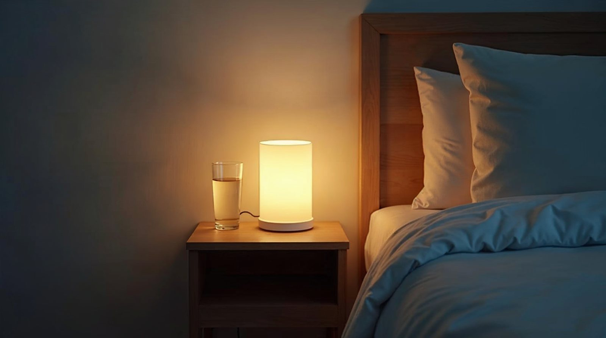
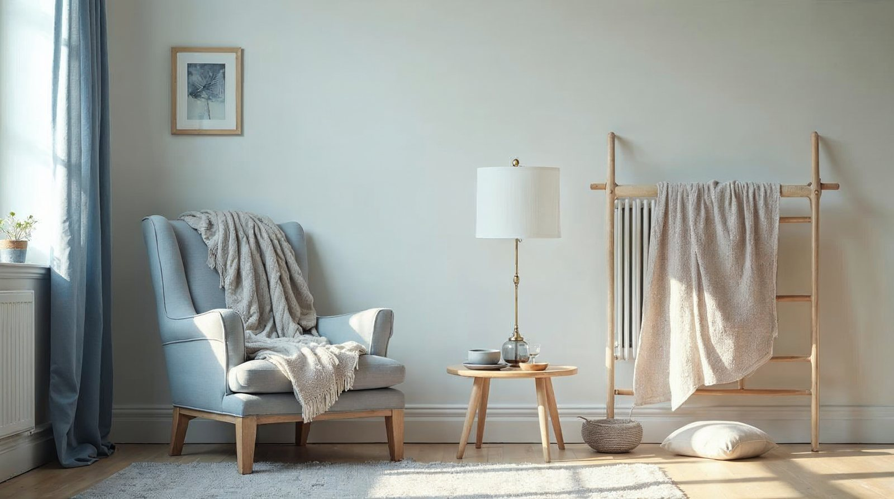
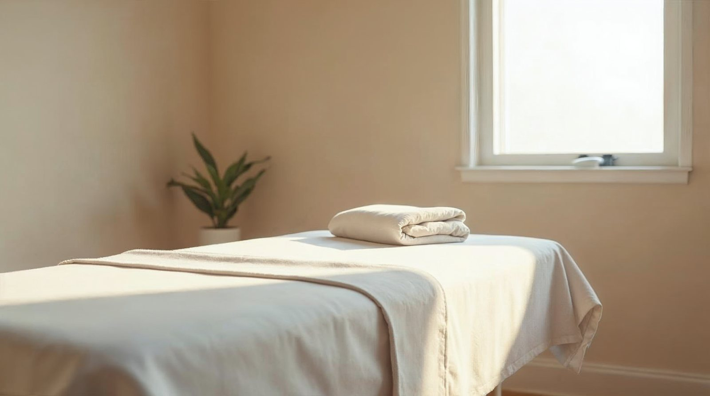
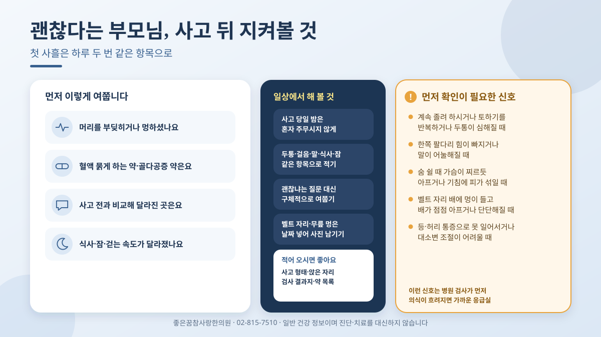

이종호 한의사 감수좋은꿈참사랑한의원 대표원장 (한의사 면허번호 19769)발행 2026-11-27 · 수정 2026-11-27
이 글의 차례
김장을 마치고 부모님을 모셔 오던 길, 연말 가족 모임에서 돌아오던 길에 빙판에서 미끄러지거나 뒤차에 받히는 일이 생기면, 운전대를 잡았던 자녀는 놀란 와중에도 부모님 얼굴부터 살피게 되죠. 그런데 어르신들은 대개 이렇게 말씀하세요. "나는 괜찮다, 너나 병원 가 봐라."
원래 그러세요. 사고 직후에는 긴장 때문에 통증을 덜 느끼시기도 하고, 자녀에게 짐이 될까 봐 불편한 곳을 줄여 말씀하시기도 하거든요. 저는 그 마음이 어디서 오는지 알기에 괜찮다는 말씀을 탓하지 않아요. 대신 그 말씀만 듣고 끝내지도 않습니다.
그러니까 사실은 두 가지를 나눠서 보셔야 해요. '지금 괜찮다고 하시는 것'과 '정말 다친 데가 없는 것'은 다른 얘기거든요. 연세가 들면 뼈가 약해져 가벼운 충격에도 갈비뼈나 척추에 금이 갈 수 있어요. 혈액을 묽게 하는 약을 드시는 분은 머리를 살짝 부딪혀도 몇 주에 걸쳐 머리 안에 피가 고이는 일이 생길 수 있고요.
그래서 머리를 부딪혔거나, 혈액을 묽게 하는 약을 드시거나, 가슴·등·허리 통증이 있다면 그날 병원 검사를 먼저 받으시게 해 주세요. 그 뒤 첫 사흘은 하루 두 번, 이후 몇 주는 일주일에 한두 번, 같은 항목을 정해 확인하는 방법을 권해요.
의식이 흐려지거나 토하기를 반복하거나 한쪽 팔다리에 힘이 빠지면 기다리지 말고 가까운 응급실로 가세요.
왜 어르신은 사고 뒤 괜찮다고만 하시고, 증상은 늦게 드러날까요
- 사고 순간 몸은 긴장 호르몬을 쏟아 내어 통증을 잠시 덜 느끼게 만듭니다. 이 긴장이 풀리는 몇 시간 뒤나 다음 날 아침에야 목, 어깨, 허리가 뻐근해지는 경우가 흔하고, 어르신은 이 변화가 더 늦게, 더 천천히 오기도 합니다.
- 운전한 자녀가 미안해할까 봐, 병원비나 보험 절차가 번거로울까 봐, 혹은 나이 들면 원래 여기저기 아프다는 생각에 아픈 곳을 줄여 말씀하시는 분이 많습니다.
- 뼈가 약한 골다공증이 있으면 안전벨트가 지나가는 쇄골과 갈비뼈, 가슴뼈에 금이 가거나, 몸이 앞뒤로 쏠리는 힘만으로도 척추뼈가 주저앉는 압박골절이 생길 수 있습니다. 등과 허리 통증을 원래 아프던 허리 탓으로 넘기기 쉬운 까닭입니다.
- 혈액을 묽게 하는 약(항응고제, 항혈소판제)을 드시면 같은 충격에도 멍이 크게 들고, 머리 안에 출혈이 생길 위험이 높아집니다. 특히 머리를 가볍게 부딪힌 뒤 몇 주에 걸쳐 피가 천천히 고여 두통, 멍함, 걸음걸이 변화로 드러나는 경우(만성 경막하 출혈)가 알려져 있습니다.
- 원래 있던 무릎 관절염, 척추관 협착, 어지럼증과 사고로 생긴 통증이 섞이면 어디까지가 새로 생긴 불편인지 본인도 구분하기 어렵습니다.
- 어르신은 아프다는 말 대신 기운이 없다, 입맛이 없다, 잠이 안 온다는 말로 몸의 변화를 표현하시는 경우가 많습니다. 식사량과 잠의 변화가 통증의 다른 얼굴일 수 있습니다.
- 겨울에는 추위로 근육이 굳어 있고, 두꺼운 외투 때문에 안전벨트가 몸에서 떠 있어 충돌 때 몸이 더 많이 쏠릴 수 있습니다.
- 한의학에서는 갑작스러운 충격 뒤 몸 안에 어혈이 생겨 통증이 한곳에 머물거나 밤에 심해진다고 보기도 하고, 크게 놀라면 기운이 흐트러져 잠과 입맛, 마음이 함께 흔들린다고 설명하기도 합니다.
먼저 이렇게 여쭙니다
- 사고가 앞에서, 뒤에서, 옆에서 난 것 가운데 어느 쪽인지, 부모님이 조수석과 뒷좌석 중 어디에 앉으셨고 안전벨트를 매셨는지, 에어백이 터졌는지 여쭙니다.
- 머리를 어디에 부딪히셨는지, 사고 직후 잠깐이라도 멍하시거나 그 순간이 기억나지 않는다고 하셨는지 여쭙니다.
- 혈액을 묽게 하는 약, 골다공증 약, 혈압약과 당뇨약을 드시는지, 인공관절이나 척추 수술을 받으신 적이 있는지 여쭙니다.
- 사고 전에 원래 불편하시던 곳이 어디였고 어느 정도였는지, 사고 뒤에 무엇이 달라졌는지 비교해 여쭙니다.
- 병원에서 어떤 검사를 받으셨고 어떤 설명을 들으셨는지 여쭙니다.
- 사고 뒤 식사량, 밤잠, 화장실 다니시는 모습, 걷는 속도가 어떻게 달라졌는지 여쭙니다.
- 혼자 사시는지, 사고 뒤 누가 곁에서 지켜보고 있는지 여쭙니다.
- 차 타기를 꺼리시거나, 자다가 놀라 깨시거나, 사고 이야기를 반복하시는지도 함께 여쭙니다.

일상에서 먼저 해 볼 수 있는 것
사고 당일: 병원 검사가 먼저인 경우 가려 두기
- 머리를 부딪히셨거나, 혈액을 묽게 하는 약을 드시거나, 숨을 크게 쉴 때 가슴이 아프시거나, 등과 허리가 아파 일어나기 힘드시거나, 목을 돌리기 어렵고 팔이 저리시다면 그날 바로 응급실이나 병원에서 검사를 받으시게 합니다. 어떤 영상 검사가 필요한지는 병원에서 판단합니다.
- 병원에서 큰 이상이 없다는 설명을 들었더라도 사고 당일 밤은 혼자 주무시지 않게 가족이 곁에 머물고, 어렵다면 밤 10시쯤과 다음 날 아침 7시쯤 전화를 드려 목소리와 대답을 확인합니다.
- 받은 검사 결과지와 처방전, 사고 장면이나 차량 사진을 한곳에 모아 둡니다.
첫 사흘: 하루 두 번 같은 질문으로 확인하기
- 아침 9시와 저녁 8시처럼 시간을 정해 직접 뵙거나 영상통화로 얼굴과 걸음을 봅니다.
- 괜찮으시냐는 질문 대신 대답이 구체적으로 나오는 질문을 드립니다. 오늘 아침은 무엇을 얼마나 드셨는지, 돌아누우실 때 어디가 당기는지, 화장실 다녀오실 때 어지럽지 않으셨는지, 기침하실 때 가슴 옆이 울리지 않는지 여쭙습니다.
- 매번 같은 여섯 가지를 적습니다. 머리 아픈 정도(0~10), 아픈 부위, 걷는 모습, 말과 기억(같은 질문을 반복하시는지), 식사량(평소의 몇 할), 밤잠입니다.
- 안전벨트가 지나간 쇄골과 가슴, 배, 그리고 무릎에 멍이 있는지 살펴 날짜를 넣어 사진으로 남깁니다. 멍은 하루 이틀 뒤에 더 진해지는 경우가 많습니다.
집에서 지내시는 동안
- 첫 2~3일은 김장 뒷정리, 무거운 장바구니 들기, 이불 빨래처럼 힘을 쓰는 집안일을 미루시게 합니다.
- 그렇다고 하루 종일 누워 계시면 근력과 입맛이 떨어지고 변비가 생기기 쉬워, 아침·점심·저녁 식후에 집 안을 5~10분씩 천천히 걸으시게 합니다.
- 사고 뒤에는 어지럼과 긴장으로 넘어지기 쉬우니, 침실에서 화장실까지 수면등을 켜 두고 욕실에 미끄럼 방지 매트를 깝니다.
- 사고 직후 붓고 열감이 있는 곳은 수건으로 감싼 찬 팩을 한 번에 10~15분 정도만 대고, 하루 이틀 지나 뻣뻣한 곳은 미지근한 온찜질을 합니다. 당뇨로 감각이 둔한 분은 핫팩과 전기장판에 저온 화상을 입기 쉬워 피부에 직접 대지 않습니다.
- 진통제를 여러 종류 겹쳐 드시지 않게 약 봉투를 함께 확인합니다. 혈액을 묽게 하는 약을 드시는 분은 일부 소염진통제가 출혈 위험을 높일 수 있어, 새 약을 드시기 전에 약사나 처방한 의사와 상의합니다.
- 낮잠은 30분 안으로 하시고, 저녁에는 사고 장면이 떠오를 만한 뉴스나 이야기를 줄여 잠자리를 편하게 해 드립니다.
그 뒤 몇 주: 일주일에 한두 번 이어서 보기
- 처음 사흘이 지나면 일주일에 한두 번, 같은 여섯 가지를 계속 확인합니다.
- 사고 몇 주 뒤라도 두통이 새로 생기거나 점점 심해지는지, 걸음이 느려지거나 한쪽으로 기우는지, 말이 어눌하거나 평소보다 멍해 보이시는지 살핍니다. 이런 변화는 시간이 지나도 사고와 관련이 있을 수 있어 바로 병원에 알립니다.

상황별 예시
- 예를 들어 김장을 마치고 어머니를 모셔 오던 길에 신호 대기 중 뒤차에 받혔고, 조수석의 어머니가 괜찮다고 하셨다가 이틀째 아침부터 돌아누울 때 등 한가운데가 아프다고 하시는 경우가 있습니다. 골다공증 진단을 받으셨다면 척추 압박골절 가능성이 있어 정형외과에서 엑스레이를 먼저 확인하고, 이상이 없다는 설명을 들은 뒤 근육의 뻐근함과 잠을 함께 살핍니다.
- 예를 들어 혈액을 묽게 하는 약을 드시는 아버지가 뒷좌석에서 앞좌석 머리받침에 이마를 가볍게 부딪혀 작은 혹만 생긴 경우에도, 그날 병원에서 머리 검사가 필요한지 상의합니다. 검사에서 이상이 없더라도 이후 몇 주 동안 두통, 걸음, 말의 변화를 기록하고, 달라지는 점이 있으면 바로 다시 병원을 찾습니다.
- 예를 들어 상도동 언덕길에서 차가 미끄러져 옆으로 부딪힌 뒤, 어머니가 아픈 데는 없다고 하시면서 사흘째 입맛이 없고 밤에 두세 번씩 깨시며 차를 타지 않으려 하시는 경우가 있습니다. 놀람 반응일 수 있지만 식사량 감소가 통증을 대신한 표현일 수도 있어, 몸 구석구석을 함께 확인하고 잠과 놀람을 따로 살핍니다.
- 예를 들어 원래 무릎 관절염이 있던 아버지가 사고 때 무릎을 앞쪽 수납함에 부딪히고도 원래 아프던 무릎이라며 참고 계신 경우, 사고 전과 비교해 붓기와 열감, 계단 내려갈 때의 통증이 새로 생겼는지 여쭙고 필요한 검사를 받으시게 합니다.
자주 하는 오해
- 본인이 괜찮다고 하시니 괜찮을 거라고 여기기 쉽지만, 어르신의 괜찮다는 말씀은 아프지 않다는 뜻보다 걱정 끼치기 싫다는 뜻일 때가 많습니다.
- 병원에서 이상이 없다고 했으니 더 지켜볼 필요가 없다고 생각하는 분도 있습니다. 검사는 그 시점의 상태를 보여 줄 뿐이어서, 머리 안 출혈이나 늦게 드러나는 통증은 며칠에서 몇 주 뒤에 나타날 수 있습니다.
- 원래 여기저기 아프시던 분이라 사고 통증을 따로 구분할 필요가 없다고 여기기도 합니다. 사고 전과 비교해 두어야 나중에 무엇이 달라졌는지 설명하기 쉽습니다.
- 꼼짝 않고 누워 쉬셔야 빨리 회복된다고 생각하기 쉽지만, 어르신은 오래 누워 지내면 근력과 입맛이 빠르게 떨어집니다. 통증이 허락하는 범위에서 조금씩 움직이시는 편이 좋습니다.
- 보험 접수는 나중에 천천히 해도 된다거나, 반대로 며칠이 지나면 진료를 받을 수 없다고 단정하는 분도 있습니다. 접수 절차와 필요한 서류는 상황마다 달라 보험사와 방문할 의료기관에 전화로 확인하는 것이 정확합니다.
스스로 점검해 보세요
- 사고 때 머리를 부딪히셨거나, 그 순간이 잘 기억나지 않는다고 하셨다.
- 혈액을 묽게 하는 약을 드시거나 골다공증 진단을 받으셨다.
- 돌아눕거나 일어나실 때 등, 허리, 가슴이 아프다고 하신다.
- 숨을 크게 쉬거나 기침하실 때 가슴 옆이 울린다고 하신다.
- 사고 뒤 식사량이 평소의 절반 가까이로 줄었거나 밤에 자주 깨신다.
- 걸음이 느려지셨거나 한쪽으로 기우는 것 같다.
- 같은 질문을 반복하시거나 평소보다 멍해 보이신다.

한의원에서 함께 살필 수 있는 경우
- 병원 검사에서 골절이나 머리 출혈이 없다는 설명을 들었는데, 목과 어깨, 허리의 뻐근함이 며칠째 남아 있는 경우
- 원래 아프시던 무릎이나 허리가 사고 뒤 더 불편해져, 무엇이 달라졌는지 함께 정리하고 싶은 경우
- 사고 뒤 놀람이 가시지 않아 잠과 입맛이 흔들리고 차 타기를 꺼리시는 경우
- 부모님이 증상을 잘 설명하지 못하셔서 가족이 기록을 들고 함께 상담받고 싶은 경우
좋은꿈참사랑한의원에서는 첫 방문 때 맥부터 짚어 놀람과 피로가 몸에 어떻게 남아 있는지 살피고, 사고가 난 모습과 부모님이 앉으셨던 자리, 병원에서 받은 검사와 설명, 복용 중인 약을 여쭈며, 사고 전과 후에 무엇이 달라졌는지 가족이 적어 온 기록과 함께 차례로 정리합니다. 이어 혀와 배를 함께 보며 식사와 소화 상태를 확인합니다.
아픈 곳은 직접 눌러 보고 움직여 보며 범위를 확인하고, 근육이나 힘줄 상태를 더 자세히 볼 필요가 있으면 초음파로 반대쪽과 비교해 살펴보기도 합니다. 어르신은 자세를 바꾸실 때 천천히 하시도록 돕고, 침이나 한약 같은 진료 방법과 강도는 연세와 지병, 복용 약을 고려해 상의합니다.
골절이나 머리 쪽 문제가 의심되는 신호가 보이면 병원 검사를 먼저 받으시도록 안내해 드립니다. 자동차보험 적용 여부는 방문 전 전화(02-815-7510)로 확인해 주세요. 다시 오시면 지난번 이후 가족이 확인한 기록을 이어서 보며 통증과 잠, 식사의 흐름을 함께 따라갑니다.
얼마나 지켜보고 언제 상담할까요
- 사고 뒤 첫 사흘은 하루 두 번, 그 뒤 4주 정도는 일주일에 한두 번 같은 항목을 확인합니다.
- 병원 검사에서 큰 이상이 없었는데도 뻐근함이 1~2주 넘게 그대로이거나, 장보기와 계단 오르내리기 같은 평소 일상이 어려워지셨다면 상담을 받아 보세요.
- 놀람과 불면이 2주 넘게 이어지거나 식사량이 회복되지 않을 때도 상담이 필요합니다.
- 두통, 걸음, 말, 의식과 관련된 변화는 사고 몇 주 뒤라도 기다리지 말고 병원에 먼저 알립니다.
이렇게 기록해 오시면 상담이 쉬워집니다
어르신은 진료실에 오시면 "이제 다 괜찮다"고 하시는 경우가 많아요. 그날 기분에 따라 기억도 달라지니까요. 그래서 가족이 적어 온 몇 줄이 제게는 가장 정확한 단서가 되거든요.
- 사고 날짜와 시간, 사고 형태, 부모님이 앉으셨던 자리, 안전벨트와 에어백 여부
- 병원에서 받은 검사 결과지와 들은 설명
- 복용 중인 약 목록(특히 혈액을 묽게 하는 약과 골다공증 약)
- 하루 두 번 확인한 여섯 가지 항목의 기록
- 날짜를 넣은 멍 사진
- 사고 전부터 원래 불편하시던 곳과 그 정도
치료는 제가 맡을게요. 대신 가족분께 하나만 부탁드려요. 하루 두 번, 같은 시간에 같은 여섯 가지를 여쭙고 적어 주세요. "어디 아프세요?"보다 "어제보다 일어나실 때 어떠세요?"처럼 어제와 견주어 물어봐 주시면 어르신도 대답하시기가 한결 편하세요.
딴 건 평소처럼 편하게 지내시게 해 드리면 돼요. 큰일 난 것처럼 대하면 어르신은 오히려 더 숨기시거든요. 운전하셨던 자녀분도 많이 놀라셨을 테니, 본인 몸도 같이 살피세요. 궁금한 건 언제든 편하게 물어보시고요. 다음에 오시면 그 기록부터 함께 펼쳐 보겠습니다.
이런 증상은 먼저 확인이 필요합니다
- 깨워도 잘 일어나지 못하시거나 평소와 다르게 계속 졸려 하시는 경우
- 토하기를 반복하시거나 두통이 점점 심해지는 경우
이런 신호가 있으면 한의원보다 가까운 병원이나 응급실을 먼저 찾으세요.
관련 글
- 뒷자리에 타고 있다가 사고가 났을 때도 살펴야 하나요?
- 교통사고 뒤 어지럼과 두통이 계속될 때는 어떤 점을 확인하나요?
- 부모님을 모시고 한의원에 처음 갈 때는 무엇을 확인하면 되나요?

여쭙는 것
- 사고가 앞에서, 뒤에서, 옆에서 난 것 가운데 어느 쪽인지, 부모님이 조수석과 뒷좌…
- 머리를 어디에 부딪히셨는지, 사고 직후 잠깐이라도 멍하시거나 그 순간이 기억나지 않…
- 혈액을 묽게 하는 약, 골다공증 약, 혈압약과 당뇨약을 드시는지, 인공관절이나 척추…
생활에서 해 볼 것
- 머리를 부딪히셨거나, 혈액을 묽게 하는 약을 드시거나, 숨을 크게 쉴 때 가슴이 아…
- 병원에서 큰 이상이 없다는 설명을 들었더라도 사고 당일 밤은 혼자 주무시지 않게 가…
- 받은 검사 결과지와 처방전, 사고 장면이나 차량 사진을 한곳에 모아 둡니다.
한의원에서 함께 살필 것
- 병원 검사에서 골절이나 머리 출혈이 없다는 설명을 들었는데, 목과 어깨, 허리의 뻐…
- 원래 아프시던 무릎이나 허리가 사고 뒤 더 불편해져, 무엇이 달라졌는지 함께 정리하…
- 사고 뒤 놀람이 가시지 않아 잠과 입맛이 흔들리고 차 타기를 꺼리시는 경우
먼저 확인이 필요한 신호
- 깨워도 잘 일어나지 못하시거나 평소와 다르게 계속 졸려 하시는 경우
- 토하기를 반복하시거나 두통이 점점 심해지는 경우
한눈에 보는 표
| 구분 | 핵심 |
|---|---|
| 여쭙는 것 | 사고가 앞에서, 뒤에서, 옆에서 난 것 가운데 어느 쪽인지, 부모님이 조수석과 뒷좌석 중 어디에 앉으셨고 안전벨트를 매셨는지, 에어백이 터졌는지 여쭙니다. 머리를 어디에 부딪히셨는지, 사고 직후 잠깐이라도 멍하시거나 그 순간이 기억나지 않는다고 하셨는지 여쭙니다. |
| 생활에서 해 볼 것 | 머리를 부딪히셨거나, 혈액을 묽게 하는 약을 드시거나, 숨을 크게 쉴 때 가슴이 아프시거나, 등과 허리가 아파 일어나기 힘드시거나, 목을 돌리기 어렵고 팔이 저리시다면 그날 바로 응급실이나 병원에서 검사를 받으시게 합니다. 어떤 영상 검사가 필요한지는 병원에서 판단합니다. 병원에서 큰 이상이 없다는 설명을 들었더라도 사고 당일 밤은 혼자 주무시지 않게 가족이 곁에 머물고, 어렵다면 밤 10시쯤과 다음 날 아침 7시쯤 전화를 드려 목소리와 대답을 확인합니다. |
| 한의원에서 함께 살필 것 | 병원 검사에서 골절이나 머리 출혈이 없다는 설명을 들었는데, 목과 어깨, 허리의 뻐근함이 며칠째 남아 있는 경우 원래 아프시던 무릎이나 허리가 사고 뒤 더 불편해져, 무엇이 달라졌는지 함께 정리하고 싶은 경우 |
| 먼저 확인이 필요한 신호 | 깨워도 잘 일어나지 못하시거나 평소와 다르게 계속 졸려 하시는 경우 토하기를 반복하시거나 두통이 점점 심해지는 경우 |
자주 묻는 질문
부모님이 사고 직후에는 정말 아무렇지 않아 보이셨는데, 그래도 병원에 가셔야 하나요?
머리를 부딪히셨거나 혈액을 묽게 하는 약을 드시거나, 가슴·등·허리 통증이 있다면 그날 병원 검사를 받으시는 것이 좋습니다. 그렇지 않더라도 첫 사흘은 하루 두 번 식사, 잠, 걸음, 통증을 확인해 변화를 놓치지 않도록 합니다.
머리를 부딪히신 뒤 며칠이 지났는데 이제 괜찮은 걸까요?
혈액을 묽게 하는 약을 드시거나 연세가 많으신 경우 머리 안 출혈이 몇 주에 걸쳐 천천히 드러나기도 합니다. 두통이 새로 생기거나 걸음, 말, 기억이 달라지면 사고 몇 주 뒤라도 바로 병원에 알리세요.
원래 허리가 안 좋으셨는데 사고 때문인지 어떻게 알 수 있나요?
사고 전 통증의 위치와 정도, 아팠던 동작을 가족이 기억하는 대로 적어 두면 비교가 쉬워집니다. 새로 생긴 통증이 돌아누울 때나 숨 쉴 때 심하다면 압박골절이나 갈비뼈 손상을 확인하기 위해 병원 검사를 먼저 받습니다.
부모님 대신 자녀가 먼저 상담을 받아도 되나요?
사고 상황과 복용 약, 가족이 지켜본 기록을 먼저 상의하실 수는 있습니다. 다만 맥과 혀, 아픈 곳은 직접 살펴야 하므로 부모님과 함께 방문해 주시고, 자동차보험 접수 절차는 방문 전 전화로 확인해 주세요.
한의원에서는 어르신의 사고 뒤 몸을 어떻게 살피나요?
맥부터 짚어 보고, 사고 경위와 병원 검사 결과, 복용 약을 여쭙습니다. 혀와 배, 아픈 부위의 움직임을 함께 살핀 뒤 연세와 지병을 고려해 진료 방법과 강도를 상의하고, 병원 검사가 먼저 필요한 신호가 보이면 그렇게 안내해 드립니다.
좋은꿈참사랑한의원은 재진 때 지난번 이야기부터 이어서 여쭙니다. 진료시간과 예약은 오시는 길에서 확인하세요.
어디서 상담받을 수 있나요?
좋은꿈참사랑한의원은 서울 동작구 만양로2길 2 신성빌딩 3층·5층(서울 동작구 상도동, 7호선 상도역 3번 출구 근처)에 있습니다. 한의사 3명(이종호 대표원장, 조영기 수석진료원장, 정원영 진료원장)이 진료합니다. 진료시간은 평일 09:30~20:00(점심 13:00~14:00), 토·일·공휴일 09:30~15:00이며, 방문 전 전화로 확인을 권합니다. 예약은 네이버 예약, 카카오톡 상담, 전화 02-815-7510로 받습니다.
이 글은 일반적인 건강 정보이며 개인의 진단이나 치료를 대신하지 않습니다. 증상이 있거나 복용 중인 약이 있다면 진료를 통해 확인하세요. 치료 효과는 개인마다 다를 수 있습니다.
작성 기준: 일반적으로 알려져 있는 건강 정보를 참고해 정리했습니다(대표원장 감수). 증상 기록은 1~2주 동안 하루 1회, 비슷한 시간에 적어 오시면 지난 상태와 비교하기 쉽습니다.